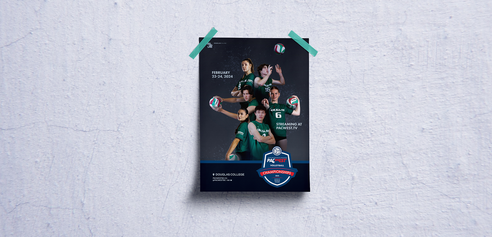
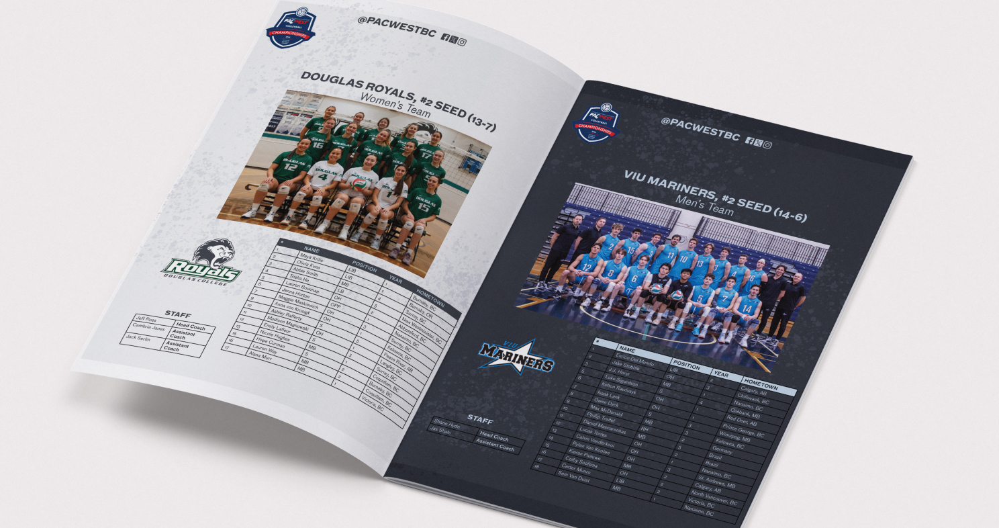
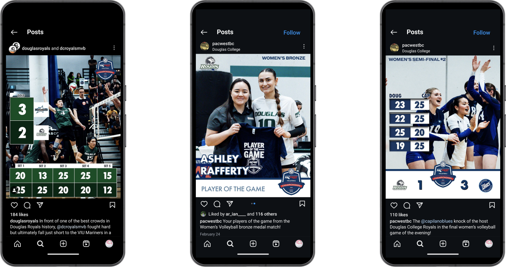
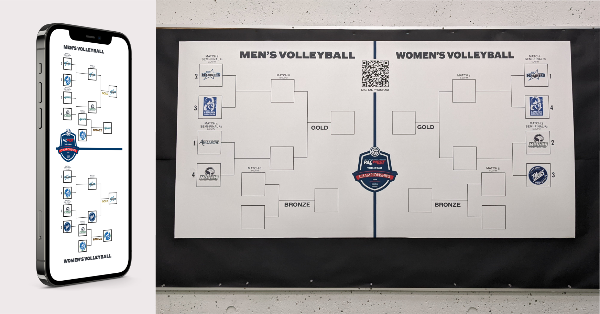
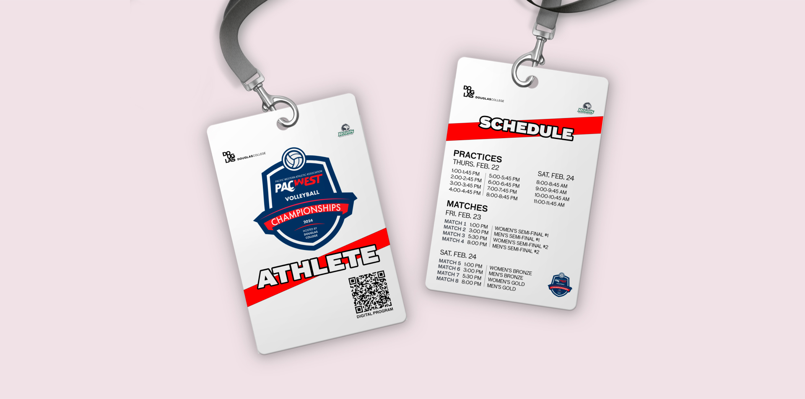

Douglas College
PACWEST Volleyball Championships
PACWEST Volleyball Championships

The Championships
Hosted by Douglas College in 2024, the PACWEST Volleyball Championships is an annual volleyball championship involving post-secondary institutions in the Pacific Western Athletic Association (PACWEST). As the host school, Douglas College’s women’s and men’s volleyball teams were automatically entered into the championships.
Contribution
Print, digital, and web collateral before, during, and after the event. This includes marketing artwork for social media, printed wayfinding signage, posters, ID badges, and event guides, and social media posts for athlete shoutouts.
Roles
Art director, graphic designer



